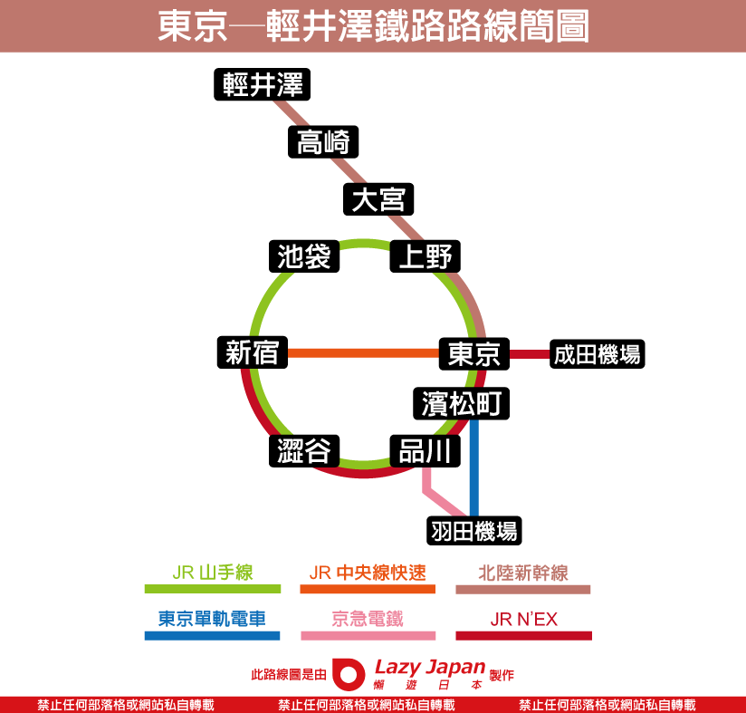

🏨 住宿：輕井澤王子飯店 (The Prince Karuizawa)
09:00 - 13:10
搭乘 CI220 抵達羽田機場
13:10 - 16:26
前往輕井澤交通路線：
- 羽田機場搭「東京單軌電車」到濱松町 (約 15-20 分)
- 濱松町轉乘「山手線」到東京車站 (約 10 分)
- 東京車站乘坐「北陸新幹線」到輕井澤 (約 1 小時)

抵達輕井澤後
前往
輕井澤站南口搭乘接駁車。
💡 路線與時刻表請見「檔案區」
傍晚
飯店 Check-in，至 Prince Shopping Plaza 用晚餐
🏨 住宿：輕井澤王子飯店 (The Prince Karuizawa)
全日
租借電動腳踏車漫遊
💡 輕井澤站「北口」出來右邊的店家價格較便宜喔！
🏨 住宿：輕井澤王子飯店 (The Prince Karuizawa)
09:00 - 18:30
🚗 租車自駕一日遊
(輕井澤站北口 Nippon Rent A Car / 車款：Voxy)
上午
白絲瀑布 (短暫散步)，結束後直奔玩具王國 (早上抵達)
✨ Gemini 嚴選 30 大美食
專為 4大3小 家族量身挑選，請滑動選擇地區
1. 川上庵 蕎麥麵 (Kawakami An)
觀光客必吃
巨大炸蝦天婦羅配蕎麥麵，座位寬敞，適合舊輕井澤逛街時用餐。
2. 澤村麵包 輕井澤春榆樹街 (Sawamura)
私房推薦
親子大推
極具水準的現烤麵包與西式燉菜，戶外木棧板座位讓小孩無拘無束。
3. Atelier de Fromage (起司工坊)
觀光客必吃
親子大推
自家製起司披薩與牽絲起司鍋，小孩絕對會吃到停不下來。
4. 明治亭 醬汁豬排丼
私房推薦
位在輕井澤 Outlet 內的美食街，份量極大的信州名物，適合發育期的大食量。
5. 淺野屋 (ASANOYA)
觀光客必吃
舊銀座通上的百年麵包店，買幾個窯烤麵包在腳踏車籃裡當下午茶最棒。
6. ミカドコーヒー (Mikado Coffee)
觀光客必吃
親子大推
超濃郁的「摩卡霜淇淋」，全家每人一支邊走邊吃消暑聖品。
7. 藏壽司 (Kura Sushi) 五反田全球旗艦店
私房推薦
親子大推
就在五反田！空間極大，吃五盤可以轉扭蛋，是三個孩子晚上的終極放電站。
8. 燕子烤肉漢堡 (Tsubame Grill) 品川店
觀光客必吃
親子大推
招牌是鋁箔紙包覆的鐵板漢堡排，一切開熱氣騰騰，小孩配白飯能吃兩大碗。
9. ミート矢澤 (Meat Yazawa) 五反田
當地激推
東京知名的黑毛和牛漢堡排專賣店，肉汁多到會爆漿，排隊人潮眾多建議提早。
10. 燒肉TORAJI 品川店
私房推薦
如果訂不到敘敘苑，這家連鎖高級燒肉是極佳替代方案，厚切牛舌非常出色。
11. Jonathan's 五反田站前店
私房推薦
親子大推
日本經典家庭餐廳，義大利麵、薯條、兒童餐全都有，是大人不想動腦找餐廳時的救星。
12. 魚米 Uobei 澀谷道玄坂店
觀光客必吃
親子大推
用平板點餐後，壽司會坐著「新幹線」直接飆速送到面前，趣味性 100 分。
13. とんかつ まい泉 (Maisen) 青山本店
觀光客必吃
表參道著名的炸豬排，由澡堂改建空間挑高，黑豚豬排用筷子就能切斷，極度軟嫩。
14. Shake Shack 神宮外苑前店
私房推薦
親子大推
被巨大銀杏樹包圍的戶外露台店，空間開闊，7 人大團吃漢堡薯條最放鬆的地方。
15. Marion Crepes 原宿竹下通
觀光客必吃
親子大推
來竹下通必備的行程，草莓鮮奶油可麗餅是三個孩子絕對會搶著吃的回憶。
16. Luke's Lobster 表參道店
觀光客必吃
爆滿的龍蝦三明治，外帶在旁邊的小板凳吃，適合大人解饞的下午茶。
17. 豐洲千客萬來 丸武玉子燒
觀光客必吃
親子大推
不用進餐廳，街邊直接買現做熱騰騰、甜甜的厚煎玉子燒，小朋友的最愛。
18. 豐洲千客萬來 築地神樂壽司
當地激推
特色是使用傳統「赤醋」的紅醋飯，海鮮極度新鮮，店面較大適合家族。
19. 築地銀章魚燒 (Gindaco) 台場 DiverCity店
觀光客必吃
親子大推
外皮炸得酥脆的章魚燒，看完鋼彈後順手買一盒解饞剛剛好。
20. KUA`AINA 漢堡 台場AQUA CITY店
私房推薦
來自夏威夷的超巨大酪梨漢堡，坐在窗邊可以同時看到自由女神與彩虹大橋！
21. 東京拉麵國技館 舞 (台場)
觀光客必吃
集結六家日本知名拉麵，大家可以點不同家的麵一起在公共用餐區享用，免去喬座位的煩惱。
22. Eggs 'n Things 台場店
觀光客必吃
親子大推
鮮奶油堆得像山一樣高的夏威夷鬆餅！視覺效果驚人，是下午茶時段的打卡名店。
23. 築地 山長玉子燒
觀光客必吃
親子大推
100 日圓一串的銅板美食，有原味跟甜味可選，大人吃海膽時小孩就吃這個。
24. 築地 そらまめ (Soramame)
私房推薦
親子大推
抹茶霜淇淋與超大顆草莓大福，吃完鹹食海鮮後最完美的甜蜜收尾。
25. 淺草 花月堂
觀光客必吃
親子大推
比臉還大的「巨無霸菠蘿麵包」，外酥內軟，夏天還可以夾入冰淇淋。
26. 淺草 壽々喜園 (Suzukien)
觀光客必吃
號稱「世界最濃抹茶冰淇淋」，提供 1 到 7 級濃度，大人挑戰 7 級，小孩吃焙茶口味。
27. 淺草炸肉餅 (Asakusa Menchi)
觀光客必吃
仲見世通旁的人氣小吃，咬下去肉汁四溢洋蔥鮮甜，注意剛炸好非常燙口！
28. 上野 肉之大山 (肉の大山)
當地激推
阿美橫丁旁的立吞炸物店，和牛可樂餅便宜又好吃，適合邊逛邊買來吃。
29. 三麗鷗 卡通造型美食街
觀光客必吃
親子大推
將咖哩飯和拉麵做成大耳狗、布丁狗的臉，雖然口味一般，但孩子絕對會為了造型開心吃光光。
30. 薩莉亞 (Saizeriya) 多摩中心站前店
私房推薦
親子大推
從三麗鷗樂園出來後，直接在車站旁吃這家平價義式餐廳。披薩義大利麵超便宜，大團體隨便點都不心疼！
📝 您的筆記清單
根據您上傳的資料整理之行前備忘錄
🥩 燒肉
📍 敘敘苑 (晴空塔店)
燒肉
親子友善度：★☆★☆★
特色：高空景觀、和牛商業午餐、甜味燒肉醬。大團入座：易 (可提前網路預約)。
📝 攻略：優點是空間大、景觀無敵、可預約，並提供兒童餐具。缺點為晚餐單點價位高。建議主攻中午和牛套餐。
📍 六歌仙 (新宿店)
燒肉吃到飽
親子友善度：☆☆☆☆
特色：黑毛和牛、海鮮吃到飽、品項極豐富。大團入座：易 (可預約但非常難搶)。
📝 攻略：優點是黑毛和牛無限續點，適合發育期小學生。缺點為位置非常熱門，須提早數月在網路搶訂。建議直接選黑毛和牛吃到飽方案。
📍 澀谷 上等燒肉ひらく
燒肉吃到飽
親子友善度：✰✰✰✰
特色：高性價比黑毛和牛任你吃附飲料。大團入座：中 (需提前預約大桌)。
📝 攻略：優點是價格比六歌仙平價，和牛板腱肉質極佳。缺點是位處擁擠的澀谷，出店後需注意小孩安全。適合大人小孩都想大口吃肉的肉食團。
🥘 壽喜燒 / 鍋物
📍 山笑ふ (表參道店)
個人壽喜燒
親子友善度：★★★
特色：高品質山形牛、個人小鍋、商午CP值高。大團入座：中 (可預約/多吧台座)。
📝 攻略：優點是一人一鍋口味自由，中午可預約、避開排隊。缺點為多吧台圍繞設計，7人較難面對面聊天。大人點山形牛，小孩選精選豬/牛肉鍋。
📍 米久本店 (淺草)
傳統壽喜燒
親子友善度：★★★★
特色：140年老字號、牛鍋套餐、用餐附證書。大團入座：中 (下午非正餐時段免排)。
📝 攻略：優點有傳統江戶風情，下午前往免排隊、分食方便。缺點是座位較古樸，白飯需另外單點。建議下午當作提早的晚餐。
📍 木曾路 (新宿三丁目店)
壽喜燒/鍋物
親子友善度：☆☆☆☆☆
特色：日式和牛壽喜燒、肉質極軟嫩。大團入座：易 (多大桌與獨立包廂)。
📝 攻略：優點是獨立包廂不怕小孩吵，肉質極嫩好咀嚼。缺點是精緻慢食，用餐時間較長。必點壽喜燒套餐。
👅 牛舌
📍 利久牛舌/ねぎし
牛舌定食
親子友善度：****
特色：連鎖牛舌定食、麥飯、山藥泥、燉牛肉。大團入座：易 (分店多/多百貨大桌)。
📝 攻略：優點為ねぎし牛舌較柔嫩好咬；百貨分店多且空間大。缺點是較常規連鎖，少了驚豔的社群視覺感。帶小孩的最佳牛舌備案，不吃牛可點烤豬肉。
📍 牛舌の檸檬 (新宿總店)
牛舌定食
親子友善度：☆☆☆
特色：社群爆紅極厚切牛舌、山藥泥麥飯。大團入座：難 (排隊長/多雙人座)。
📝 攻略：優點是粉嫩厚切牛舌擺盤極美，口感外脆內嫩。缺點是牛舌太厚；7人團入座需拆桌。大人必須用剪刀幫小孩剪成小塊才好咬。
🍜 拉麵 / 烏龍麵
📍 入鹿TOKYO (六本木店)
米其林拉麵
親子友善度：***
特色：米其林必比登、牛肝菌醬油拉麵。大團入座：難 (店面小/座位少)。
📝 攻略：優點為湯頭優雅清香不重鹹，對小孩負擔小。缺點是座位極少，7人必須拆散分開坐，需現場苦排。必點牛肝菌醬油拉麵，建議避開正餐尖峰。
📍 阿夫利 (AFURI)
清爽拉麵
親子友善度：****
特色：招牌柚子鹽拉麵、清爽不油膩。大團入座：中 (商場分店空間大)。
📝 攻略：優點是柚子香氣非常受媽媽歡迎，有非吧台的桌席。缺點為對喜歡濃厚豚骨的大人來說口味可能偏淡。推薦去設在商場內的分店，空間較大。
📍 銀座 篝
拉麵
親子友善度：☆☆
特色：篝雞白湯濃郁如西式濃湯。大團入座：極難 (吧台多/位置極窄)。
📝 攻略：優點是篝的雞白湯小孩很愛。缺點是位置少、排隊長。若想吃「篝」，建議改去商場分店。
📍 五代目 花山烏龍麵 (秋葉原店)
烏龍麵
親子友善度：★☆
特色：5公分極寬烏龍麵、炸蝦天婦羅。大團入座：中 (秋葉原店相對好排)。
📝 攻略：優點為5公分寬麵視覺極具趣味，小學生超級愛。缺點是銀座店排隊極長，秋葉原店熱門時段仍需排。推薦點「冷麵」沾芝麻醬，麵條超有特色，可以買回家當伴手禮。
📍 六厘 (晴空塔店)
濃厚沾麵
親子友善度：★★★★
特色：超濃郁豚骨魚介沾麵、粗麵條極Q彈。大團入座：中 (晴空塔店座位較多)。
📝 攻略：優點為沾麵吃法有趣，吃完直接逛晴空塔放電。缺點是沾湯非常濃厚黏稠，部分小孩可能覺得太鹹。吃完可請店家加高湯(割湯)稀釋喝下。
🍣 壽司 / 海鮮
📍 築地海膽虎
海鮮丼飯
親子友善度：☆☆
特色：三種產地頂級海膽丼、濃郁無腥味。大團入座：難 (店面小/排隊長)。
📝 攻略：優點是海膽控大人的極致天堂。缺點是價格貴，座位少，小孩通常不吃生海膽。9:00前去免排，小孩可在市場買烤玉子燒吃。
📍 根室花丸
迴轉壽司
親子友善度：****☆
特色：北海道空運、巨大干貝、蟹腳味噌湯。大團入座：難 (現場排隊極瘋狂)。
📝 攻略：優點為迴轉壽司娛樂性高，平板有中英文好點餐。缺點是動輒現場排隊1-2小時。派大人提早去抽號碼牌，小孩主攻熟食。
🍰 甜點
📍 Unison Tailor (人形町)
咖啡下午茶
親子友善度：☆☆☆☆
特色：現烤法式吐司配香草冰淇淋、高水準咖啡。大團入座：中 (週末下午易客滿)。
📝 攻略：優點是大人喝咖啡、小孩吃冰，完美的逛街中繼站。缺點為若客滿可能需要稍微等待大桌子。是逛累時的完美充點電選擇。
📍 PATISSERIE TEN& (銀座)
甜點泡芙
親子友善度：☆☆☆☆☆
特色：脆皮爆漿泡芙、抹茶與香草口味。大團入座：易 (直接外帶不用等)。
📝 攻略：優點為內餡極滿不甜膩，可外帶在路上吃，機動性高。缺點是店面極小，沒有位置能讓7人坐下喝下午茶。直接走過去外帶幾顆，帶去附近公園享用。
📍 紅鶴 (淺草)
舒芙蕾鬆餅
親子友善度：*****
特色：培根太陽蛋鹹鬆餅、巧克力甜鬆餅。大團入座：極難 (需清晨現場登記)。
📝 攻略：優點是口感像雲朵，鹹甜口味驚艷，小孩會尖叫。缺點是早上7:00要派大人去現場排隊登記，成本高。